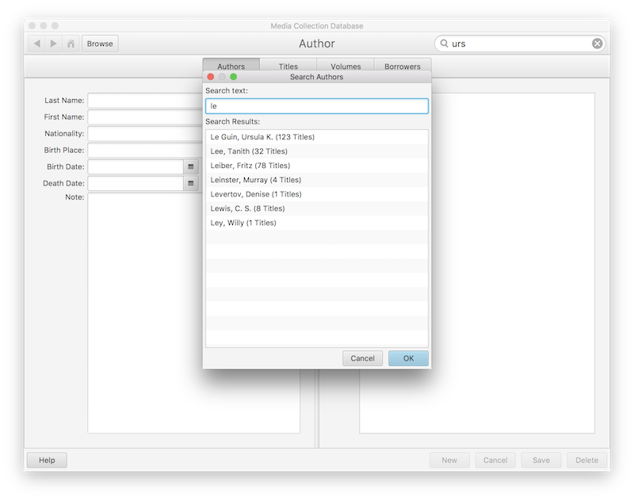
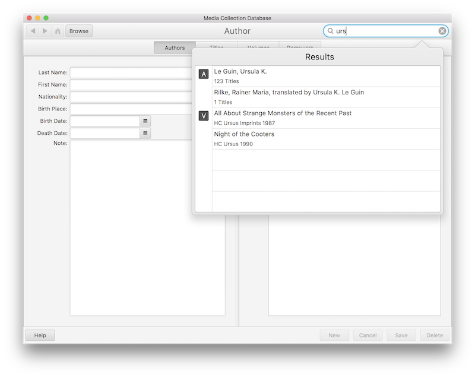
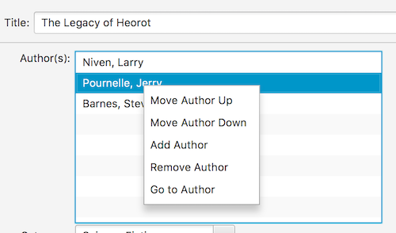
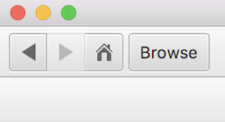
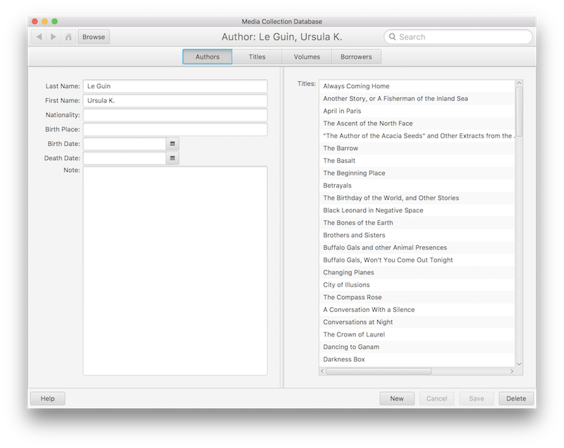
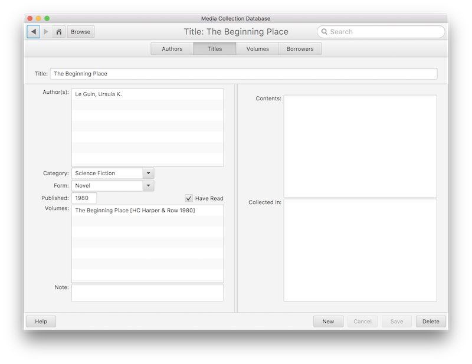
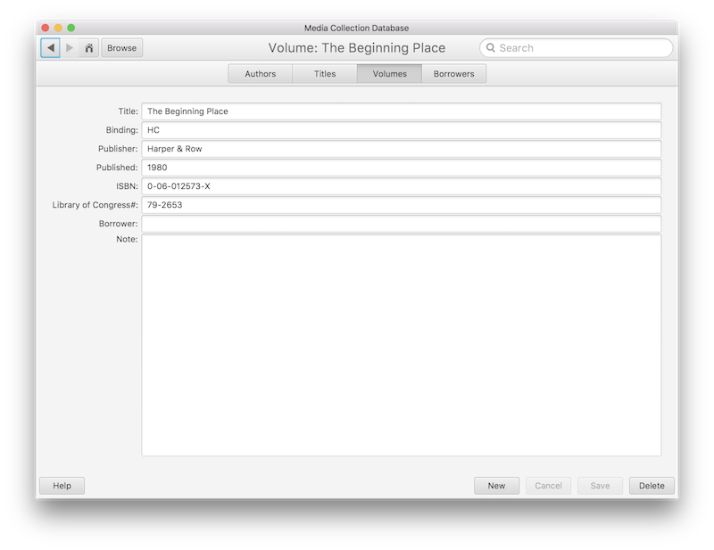

The Media Collection Database (MCDB) is a simple application that maintains a linked set of authors, titles, volumes, and borrowers.
There are four types of elements within the Media Collection Database: authors, titles, volumes, and borrowers.
If the current element being displayed is empty or unchanged, you can click on the Author, Title, Volume, or Borrower button or the menu item to view elements of that type.
The "Browse" button allows searching within the type of element currently being displayed, e.g. on the Authors display the "Browse" button will browse authors.

The "Search" box at the top right allows full text searching of all entries.

Right-clicking in a display field will bring up a context menu for that field. The context menu actions are also available in the menu.

Double-clicking on a line in a display field, such as an author, title, volume, or borrower will take you to that element. This action is also available in the menu.
The back, forward, and home buttons can be used to navigate through your link history.

An author is a creator of a title. A title can have more than one author. A title can have no authors, but that is usually only the case when you are first entering the title information.
When entering a work by a new author, enter and save the author's information first. Then enter the title and add the author to it.

Titles are the core elements of the Media Collection Database. A title is any element you wish to store, e.g. a story, a poem, a song, or a collection of elements, e.g. a poetry collection, a fiction anthology, a CD, etc.
When entering a collection, such as a poetry collection, a short story collection, or a CD or album, enter the collection first, then enter the poem, story, or song and add it to the collection.
The "Category" and "Form" combo boxes are populated with entries from files. You may type whatever text you choose. If you want to customize the default options, the categories.txt and forms.txt files are located in the .mcdb directory in your home directory (/Users/your-username/.mcdb). Enter the text one entry per line.

Volumes are physical entities. (For the purposes of the application, a Kindle book or an mp3 file is a physical entity.) A volume is something you can purchase, loan to someone, and/or hold in your hand.
Volumes are a somewhat confusing concept, but essentially, a volume only exists as a concept to contain a title that can be purchased, loaned, etc. You generally cannot loan one poem in a collection to someone else. A volume is created to track the physical characteristics of a book, say, such as its binding type (paper, hardcover), its ISBN, its publication date, etc.
When entering a new book or CD, create the title first, then add the volume.

A borrower is someone who has at some point borrowed a volume in the collection.
When someone borrows a volume for the first time, enter the borrower, then check out the book to them. When they return the volume there is no need to delete the borrower. Just check the volume back in. The borrower may borrow another volume in the future.
When entering a work by a new author, enter and save the author's information first. Then enter the title and add the author to it.
When entering a collection, such as a poetry collection, a short story collection, or a CD or album, enter the collection first, then enter the poem, story, or song and add it to the collection.
When entering a new book or CD, create the title first, then add the volume.
When someone borrows a volume for the first time, enter the borrower, then check out the book to them. When they return the volume there is no need to delete the borrower. Just check the volume back in. The borrower may borrow another volume in the future.
Download the application to your computer.
| Windows: | mcdb.jar |
| Linux: | mcdb.jar |
| Mac: | mcdb.dmg |
Copy the application to your application folder. Make a shortcut if desired.
Launch the application by double-clicking it. (mcdb.app on the Mac, mcdb.jar on Windows and Linux.)